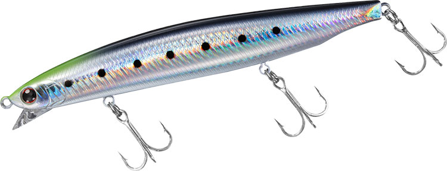
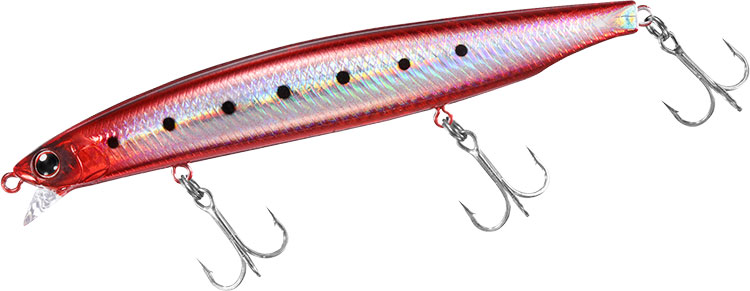
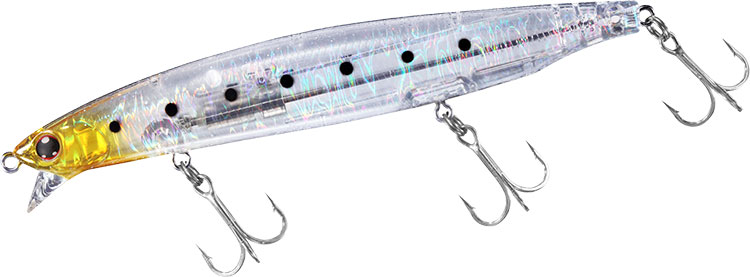
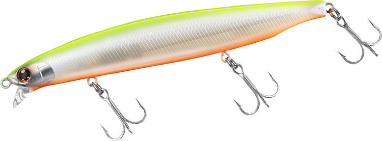

ショアラインシャイナーZ バーティスR 125F-SSR
（SHORELINE SHINER-Z VERTICE R 125F-SSR）
ショアラインシャイナーZ バーティスR 125F-SSR（SHORELINE SHINER-Z VERTICE R 125F-SSR）はDAIWA（ダイワ）のスーパーシャローランナーです。
「飛びの伝説」を引き継いだSLZバーティスRのSSR（スーパーシャロー）モデルで、前身のSLZバーティス120F-SSRからフルモデルチェンジした1本。エアロボディと大型タングステンウエイトによる飛距離と、有効レンジ約30〜50cmのヌルヌルとしたロールアクションで、浅場を広く探れるのが最大の魅力です。

画像出典:DAIWA公式HP
スペック
- メーカー
- DAIWA（ダイワ）
- タイプ
- スローフローティング
- 全長
- 125mm
- 自重
- 20.3g
- 有効レンジ
- 約0.3〜0.5m
- フック
- #5トレブル
- リング
- #3
- 飛距離
- Max75.0m／Ave72.1m
- アクション
- ヌルヌルロールアクション
- ターゲット
- シーバス
- 価格
- 2,200円（メーカー希望本体価格）
▼今すぐチェック
バーティスR 125F-SSRの特徴
エアロボディ×大型タングステンウエイトで、1クラス上の飛距離を手に入れたスーパーシャローランナー
-
エアロボディ化と大型ウエイトで1クラス上の飛距離
空気抵抗を抑えたエアロボディに、ボディ後端まで一気に移動する大型タングステンウエイトワイヤーオシレート機構を搭載。キックバックスプリングをハーフにしてキャスト後半の失速も抑え、当社テストで平均72.1mの飛距離を実現している。
-
マグロックVer.S＋Rで着水後すぐにアクション
着水の衝撃でウエイトが前方へ戻り、磁石で引き付けて保持する重心移動システムを採用。遠投した先でもウエイトの戻りを気にせず、着水直後からアクションを出せる。
-
有効レンジ約30〜50cm・SSR専用リップ
SSR専用リップで、有効レンジは約30〜50cm。ロール主体のおとなしいアクションながらレスポンスが良く、あらゆるリトリーブスピードに対応する。ドリフト中も不意にウエイトが戻りにくく、アクションのオン・オフを入れやすい。
バーティスR 125F-SSRの使い方
基本はスロー〜ミディアムのただ巻き。着水後すぐに巻き始め、ヌルヌルとしたロールアクションで表層付近をトレースする。
河川や河口ではドリフトも有効で、流れに乗せてアクションを抑えながら流し込み、ヨレや明暗に差し掛かったところで巻きを入れてアクションをオンにすると、メリハリのある誘いになる。飛距離を活かして沖のシャローやブレイクまで届かせ、コースを変えながら広く探るのが基本の組み立てです。
バーティスR 125F-SSRの得意な状況
干潟・河口・河川・サーフなど、水深の浅いエリアを広く探りたい状況が出番。
遠浅の干潟やサーフのように「浅いけれど沖まで届かせたい」場面や、イワシ・イナッコなどのベイトが表層付近に浮いている状況で強い。オールシーズン、表層攻略のサーチベイトとして使える1本です。
ワンポイント
飛距離が出る分、着水点が遠くなりラインスラッグも大きくなりがちです。着水と同時に糸ふけを素早く回収してから巻き始めると、立ち上がりからロールアクションが安定します。
ドリフトで流すときは、ラインを張りすぎず緩めすぎずの状態を保つと、アクションのオン・オフをコントロールしやすくなります。
バーティスR F-SSRシリーズの使い分け
| モデル | 全長／自重 | 得意な場面 |
|---|---|---|
| 98F-SSR | 98mm／16g | 稚鮎やイナッコなど小型ベイト。干潟や河川の岸際などの浅いステージに |
| 125F-SSR | 125mm／20.3g | 飛距離とシルエットのバランス型。浅場を広く探るサーチベイト（本記事のモデル） |
| 140F-SSR | 140mm／26g | シリーズ最大の飛距離（Ave79.8m）。大型ベイトや広大なフィールドに |
バーティスR F-SSRは98・125・140の3サイズ展開で、有効レンジはどれも約30〜50cm。ベイトのサイズと必要な飛距離で選び分けられる。125F-SSRはその中で「飛距離とシルエットのバランス」を担う中核モデルです。
人気カラー
バーティスR 125F-SSRは全10色展開。シャローのシーバス狙いでオススメのカラーを厳選して紹介します。

アデルチャートヘッドイワシチャートヘッドのイワシカラー。視認性とナチュラルさを両立した1色目にオススメの定番。

アデルバーニングイワシフラッシングの強いアデル系イワシ。日中の晴天や澄み潮でベイトに寄せたいときに。

ケイムラ生シラスケイムラ入りのクリア系。シラスなどの小型ベイトや、スレた魚にナチュラルに見せたいときに。

チャートバックパールチャートの背中とパールの高視認カラー。マズメや濁り潮、ナイトゲームのアピールに。
画像出典:DAIWA公式HP
バーティスR 125F-SSRに似ているルアー
-
 VADUM125F（ヴァダム125F）
レガーレ
詳細はこちら＞
VADUM125F（ヴァダム125F）
レガーレ
詳細はこちら＞
全長125mm・自重21gのシャローランナー。アピールを抑えたロール主体の”静”のアクションでスレた魚に喰わせるコンセプトで、ロール系のおとなしい泳ぎで表層付近を引くという点がバーティスR 125F-SSRと共通する。
-
 コモモ125カウンター
ima
詳細はこちら＞
コモモ125カウンター
ima
詳細はこちら＞
全長125mm・自重22gの海水サスペンドモデル。レンジは30〜60cmとバーティスR 125F-SSRに近く、なめらかに抑えたアクションでナチュラルに見せられる。止めても浮きにくいサスペンド設定で、ポーズを入れたいときの持ち替えに。
-
 シャロール126F-SSR
ダイワ
詳細はこちら＞
シャロール126F-SSR
ダイワ
詳細はこちら＞
同じダイワのシャローランナー。全長126mmのフローティングミノーで、浅場のシーバスを狙うというコンセプトとサイズ感がバーティスR 125F-SSRと重なる1本。